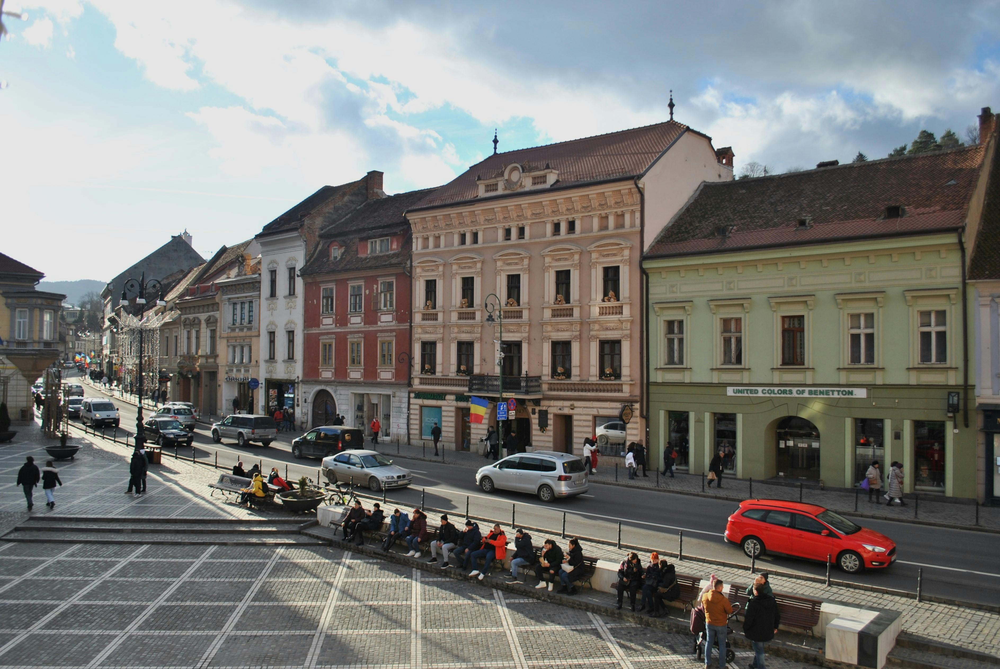
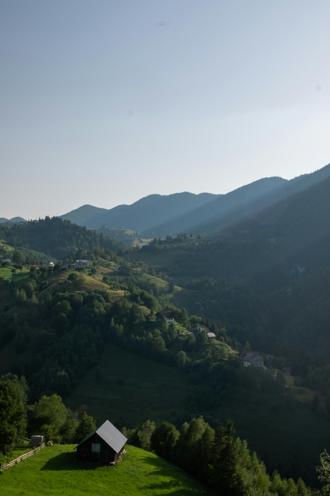
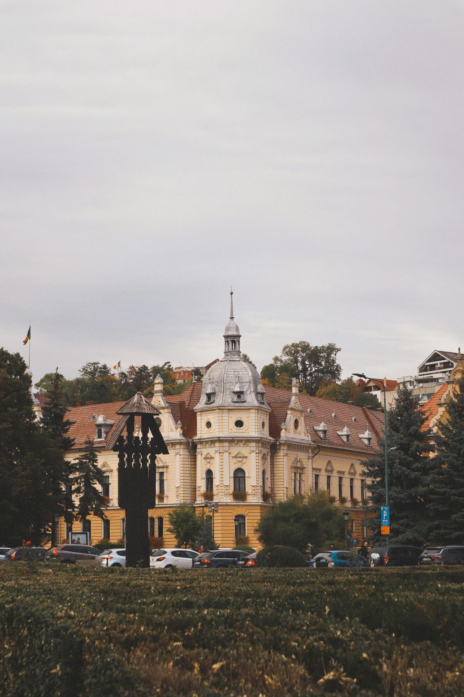
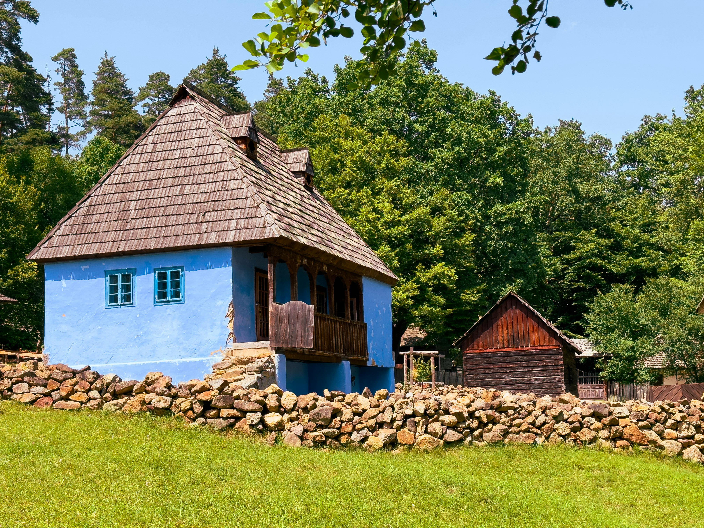

Things to Do in Brașov
Brașov is not only a city of beautiful landmarks, but also a destination full of memorable experiences. Visitors can enjoy outdoor activities, discover the city’s historic atmosphere, and explore Romanian traditions through food, culture, and village life. Whether you are seeking relaxation or adventure, Brașov offers something unique for every traveler.

Go Hiking
Brașov is surrounded by mountain trails, forests, and scenic viewpoints, making it an ideal place for hiking. Visitors can enjoy routes around Mount Tâmpa and other nearby areas while taking in panoramic views of the city and the Carpathian landscape. The fresh mountain air and peaceful surroundings create the perfect setting for both relaxing walks and more challenging outdoor adventures. Explore Trails

Take a City Tour
A walking tour through Brașov’s old town allows visitors to discover the city’s rich history, unique architecture, and vibrant local atmosphere. Exploring its streets, squares, and hidden corners is one of the best ways to experience the true character of Brașov. Book a Tour

Experience Traditional Romanian Life
Visitors can also spend time in traditional Romanian settings near Brașov, where they can enjoy local food, see older houses, and experience customs that reflect the country’s rural heritage. This offers a more authentic side of Romania, including traditional clothing, home-style dishes, and a peaceful village atmosphere. Book Traditional Experience
Activities Gallery
See the kinds of experiences visitors can enjoy in and around Brașov, from mountain walks and city exploration to traditional Romanian life.


